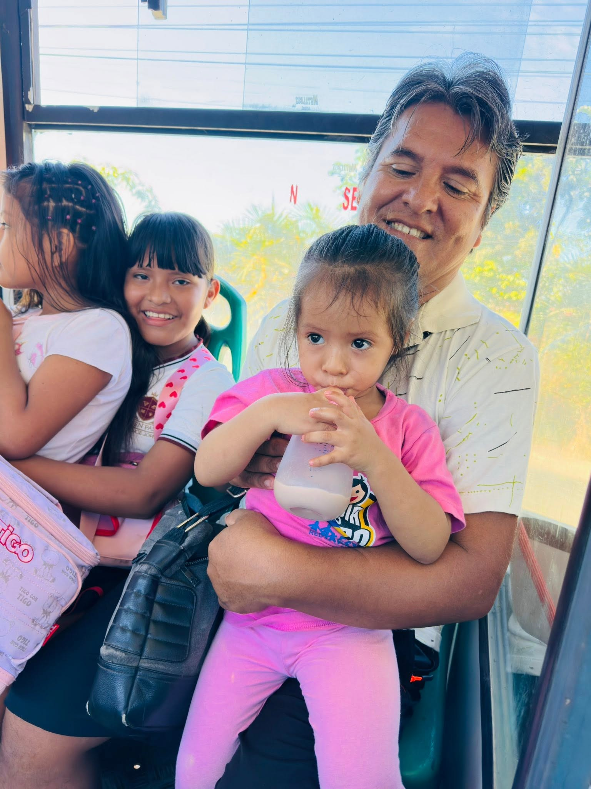
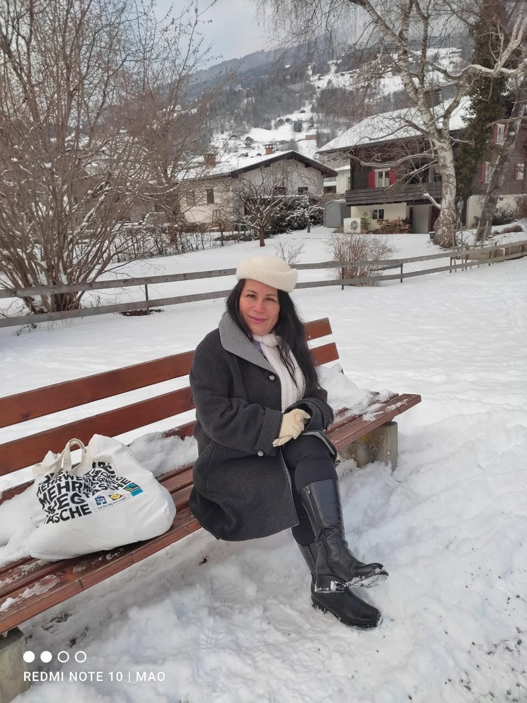

Inicio del año escolar 2026
Damos la bienvenida a todos los estudiantes para un nuevo año de aprendizajes.
Leer más →Excelencia académica. Formación en valores. Visión global.
I.E.P MI BUEN PASTOR es una institución educativa comprometida con una formación integral: académica, espiritual y humana.
Años de trayectoria
Docentes calificados
Niveles educativos
Educación en valores
Un lugar donde los sueños de tus hijos comienzan a hacerse realidad.
Con 12 años de trayectoria en Atalaya, acompañamos a cada estudiante con una pedagogía que une la excelencia académica y la formación en valores cristianos, formando personas íntegras que aprenden a pensar, a servir y a crecer con fe.
Aquí tus hijos no solo aprenden materias: aprenden a soñar, a compartir y a crecer rodeados de cariño. Cada niño es conocido por su nombre, y verlos llegar al colegio con una sonrisa cada mañana es nuestra mayor alegría.
Contamos con aulas acogedoras, patios para jugar, deporte, música y actividades que despiertan su curiosidad. Nuestras puertas están siempre abiertas para ti: ven a conocernos, te esperamos con los brazos abiertos.

Valores que acompañan a los estudiantes toda la vida.
Acompañamos a cada estudiante desde sus primeros pasos hasta la secundaria.
La I.E.P MI BUEN PASTOR ofrece una formación académica integral en todas sus etapas, uniendo el currículo nacional con una sólida educación en valores cristianos. Cada nivel está pensado para que los estudiantes desarrollen sus habilidades, fortalezcan su fe y se preparen para los desafíos del futuro.

De 0 a 2 años
El primer paso dentro de nuestra propuesta educativa. Cuidamos de los más pequeños con cariño, seguridad y estimulación temprana.
Saber más →
De 3 a 5 años
El objetivo es fomentar el amor por aprender mediante el juego, la música, el desarrollo personal y la creatividad.
Saber más →
De 6 a 11 años
Fortalecemos la lectura, la escritura y las matemáticas, estableciendo vínculos entre estudiantes y docentes que promueven la búsqueda del conocimiento.
Saber más →
De 12 a 17 años
Formamos jóvenes críticos y responsables, preparados para los estudios superiores y para servir a la sociedad con valores.
Saber más →
“Con gran alegría les doy la bienvenida a nuestra casa educativa. Trabajamos cada día para que sus hijos crezcan en conocimiento, valores y fe.”
Celia Jeannete Valerio Avila
Directora de la I.E.P MI BUEN PASTOR
Mira lo fácil que es unirte a nuestra comunidad.
Completa el formulario de consulta o comunícate con nosotros.
Registra al postulante y envía la documentación requerida.
Formaliza la matrícula y asegura la vacante de tu hijo.
Tu hijo empieza su camino en la familia MI BUEN PASTOR.
Lo que está pasando en nuestro colegio.
Damos la bienvenida a todos los estudiantes para un nuevo año de aprendizajes.
Leer más →
Arrancó la competencia deportiva entre grados. ¡Vengan a apoyar!
Leer más →Escucha a quienes ya forman parte de nuestra comunidad.
“Mis hijos llegaron tímidos y hoy participan con seguridad. Los docentes los conocen por su nombre y los quieren de verdad.”
María Fernández
Madre de familia · Inicial
“La formación en valores se nota. Mi hijo aprendió a respetar, a ayudar y, sobre todo, a querer ir al colegio cada mañana.”
Carlos Quispe
Padre de familia · Primaria
“Como estudiante encontré un lugar donde puedo crecer, hacer deporte y participar. Los profesores te acompañan en todo.”
Lucía Valverde
Estudiante · Secundaria
“El colegio es como una familia. Nos acompañan en los buenos y difíciles momentos, siempre con fe y alegría.”
Rosa Huamán
Madre de familia · Cuna
Inscripciones abiertas para el año escolar 2026.